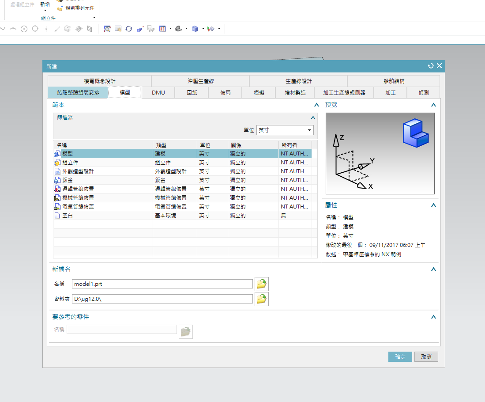
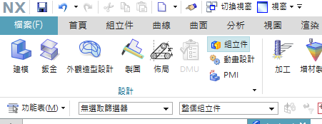
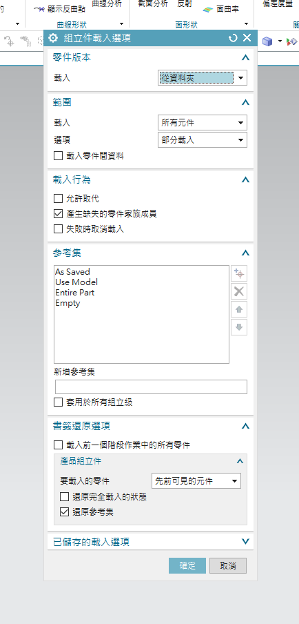

week6~9 <<
Previous Next >> week15~18
week10~14
week10
由組長建立分組網站並且請組員加入分組網站
1.由組長創建分組網站https://s40723221.github.io/cad2019bg2/content/index.html和分組倉儲https://github.com/s40723221/cad2019bg2
2.由組員透過fork加入創建之分組網站
3.加入後用git clone submodules 組別倉儲網址
4.以git pull request的方式進行推送(必須由組長認證推送內容才可以成功推送)
week12
組員個別整理電子書內容 (負責6章節)
第6章-裝配建模
在本章中，您將學習在裝配體建模中使用的兩種方法。
NX 12 Assembly是包含各個零件的零件文件。它們被添加到零件文件中
這樣一來，零件實際上就位於裝配體中並鏈接到原始零件。這個
無需為計算機中的各個部件創建單獨的內存空間。所有零件都是可選的，可在設計過程中用於信息和配合。
6.1 術語
部件
裝配體是指向零件和/或子裝配體的指針的集合。 裝配是零件
文件，其中包含組件對象。
組件對象
零部件對像是指向包含零部件的零件文件的非幾何指針
幾何。 組件對象存儲諸如圖層，顏色，參考集，位置之類的信息
相對於文件系統中零件的裝配體和路徑的零件數據。
組成部分
零件是指的零件文件裝配件中的零部件對象。 實際幾何存儲在組件中部分並被引用，而不是被部件。
組件發生
零部件的出現是零部件文件中指向幾何的指針。 使用組件
在不創建其他幾何圖形的情況下創建對零部件的一個或多個引用的實例。
參考集
參考集是零部件或子裝配體中的對象的命名集合，您可以
用於簡化高層裝配中零部件的表示。
6.2組裝方法
創建任何裝配體模型有兩種基本方法。
• 自上而下的方法
•自下而上的方法
6.2.1自上而下的方法
通過這種方法，將創建裝配零件文件。首先，在該文件中創建組件。 然後各個零件均已建模。 這類建模在新設計中很有用。
6.2.2自下而上的方法
先傳統方式，然後添加到裝配中零件文件。 這項技術特別有用，以前的零件文件已經存在時設計，並且可以重複使用。
6.2.3混合與匹配
可以將這兩種方法結合起來必要的，以增加裝配的靈活性設計需求。
6.3裝配與約束
導航儀裝配導航器和約束導航器，位於部件導航器的頂部
屏幕左側的資源欄。 這些導航器向您展示了構成
裝配體，包括零件層次結構，零件名稱，有關零件的信息，例如是否
部分是只讀的，對像數和約束狀態。
6.4匹配約束
將零部件對象添加到裝配零件文件後，將對每個零部件對象進行配對
與現有對象。 通過在裝配的零部件上分配配合條件，您可以在這些組件之間建立位置關係或約束。 這些關係是稱為交配約束。 配合條件由一個或多個配合約束組成。有不同的配合約束，如下所述：
觸摸/對齊：選擇要對齊的平面對象將是共面的，但平面的法線
將指向同一方向。 圓柱物體的中心線將與每個
其他。
同心：約束兩個組件的圓形或橢圓形邊緣，因此中心為
重合併且邊緣的平面共面。
距離：在兩個對象之間建立一個+/-距離（偏移）值
平行：所選對象將彼此平行。
NX 12 for Engineering Design 125密蘇里科技大學
垂直：所選對象將彼此垂直。
鍵合：創建焊接並將零件焊接在一起以作為單個對象移動。
居中：對象將在其他對象之間居中，即沿槽定位圓柱體
並將圓柱體在插槽中居中。
角度：這將在組件上選擇的兩個對象實體之間固定一個恆定的角度
組裝。
6.5示例
我們將組裝葉輪組件對象。 您已經在其中建模了所有組件前幾章。 現在我們必須將它們插入組裝環境並應用將它們相對放置的約束。 組裝完成後，我們可以創建分解圖並準備繪圖。
6.5.1開始組裝
➢創建一個新文件
➢在模型選項卡下選擇裝配
➢將單位設置為英寸
➢命名為Impeller_assembly.prt

或者，如果您在“建模應用程序”中並想要開始組裝，
➢在應用程序選項卡中打開程序集選項，然後會出現一個新的程序集選項卡

在組件選項中，
•“添加”選項添加已創建其零件文件的新零部件對象。
•“新建”可讓您在裝配文件中創建新的零件幾何體
正在使用自頂向下方法進行組裝。裝配約束允許您創建裝配約束，而移動零部件允許
您可以在裝配中的任何位置重新定位零部件
6.5.2添加組件和約束
➢選擇添加
右側顯示的對話框將彈出。 您可以從現有文件中選擇零件文件（應該已經
顯示在“已加載的零件”選項卡中），也可以加載零件文件使用對話框中的打開文件選項。 這將加載選定的零件文件進入“加載的零件”對話框。
➢單擊打開圖標並選擇文件
Impeller_upper-casing.prt
➢在零件名稱對話框中單擊確定。然後我們需要設置一個位置來放置坐標系第一部分的 在位置組框中，保持“裝配位置”選項的默認“捕捉”。
➢單擊選擇對象
現在您應該可以在透明模式下看到零件了，如右圖所示。
➢單擊指向對話框圖標並創建
[0，0，0]的坐標
➢單擊確定退出點對話框
注意：可以隨意使用“循環方向”選項來設置不同的方向。

導入 GitExtensions
1.先開Y槽，開啟GitExtensions
2.進setting，設定home路徑
3.設定SSH路徑改putty
4.開啟倉儲，點tools的gul
5.再來stage -commit -push即可
以下為操作紀錄 (放心看)
webot tutorial - 1
1.先創建儲存檔案的資料夾
2.創建一個新生成的世界
3.創建好之後先用加號加入一個木箱並更改其尺寸
4.添加完成了之後我們要複製並貼上木箱直到場面上有三個木箱
5.添加e-puck robot並且啟動試試看是否可以運動
6.增加控制器操縱e-puck robot添加指令後機器人應該會直走並旋轉後停下
7.修改這個控制器的功能貼上另一個指令如果成功機器人因該會緩慢行走
8.修改機器人馬達的動力使其達到原地旋轉
tutorial 1 :https://cyberbotics.com/doc/guide/tutorial-1-your-first-simulation-in-webots
以下為操作影片
v-rep tutorial - bubbleRob
week13
第13周之前的內容報告
revel (點這)
week14
webot tutorial - 2
1.將之前的模擬檔案開啟
2.將之前建立的場地刪除
3.自己新增一個新的場地並且更改大小
4.開始創建球體按照影片新建好節點
5.更改好球體的位置
6.學習使用def use機制創建並且設定四面圍牆壁
7.創建新的牆壁節點並且和球體一樣對節點命名
8.調整好位置後即可以做另外的牆壁
以下為操作影片
tutorial 2:https://cyberbotics.com/doc/guide/tutorial-2-modification-of-the-environment
week6~9 <<
Previous Next >> week15~18